LL Buchanan Lake
Floating islands
Betty's Island - 2, a floating island....
Continued from Betty's Island -1 page. Starting the top of the page on 9 May, and continuing building the island until 31 May, before the next Betty's Island page.
Back on Betty's Island -1 page, in February 2007 we left the island ready to push into the water.
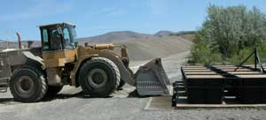
9 May: Betty's Island was launched.
First off, the lake water level was significantly low, leaving about 4 feet of dry land between the water and the lower edge of the launching ramp. After gathering and repairing a lot of rusty old rollers to cover the 4 feet, and homdihooming over the design, we shifted to plan G. Jim brought the big front end loader over and pushed the entire ramp to the edge of the water. The island guy sure wished he had thought of that before spending all that time messing with rollers. The engineer was fired again. In fact, Jim should have just pushed the whole thing into the water, but we did not know how strong the island frame was, so we were being cautious.
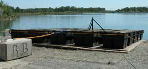
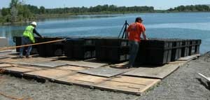
Then we rigged some ropes, unscrewed the ramp edge screws, and the island gently rolled into the water, with a small push, just like it was supposed to roll into the water, somewhat, with a few straggling sheets of plyhwood. The design worked. Beginner's luck.
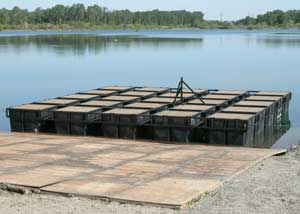
The significant ramp angle change near the water illuminated the impressive strength of the steel frame. When the front edge went down into the water, the frame lifted the back edge of the island. The welder was given a nod of approval. That is when we realized that we could have just pushed the whole thing in with the front end loader right from the get-go, and not wasted all that money on the second layer of plywood and dowels.
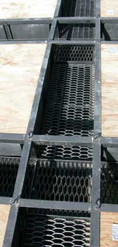
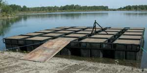
10 May: If the island slave had knowed how long it would take to take the launch ramp apart, he would have used a lot fewer screws to put it together. After that he only had time to get the expanded steel positioned in the island dirt troughs that day.
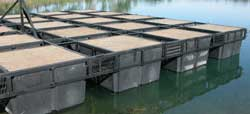
Well, there was also the matter of some guy who stopped by, who mentioned his interest in ducks, of all things. He and the island slave ended up yakking about ducks until the chickens came home to roost. They would still be there yakking about ducks if that wine the duck guy had in his car were not white wine for his wife. So now the island guy might make some wood duck nests to put in the trees he is protecting from the beaver. There were some ducks nearby, listening. They have heard it all before. Instead of getting the goose nesting island done, which will be big enough for a duck nest on the other side of the island, the humans just stand around yakking about what they are going to do next. Furthermore, if you listen carefully, as do the ducks, the only reason the humans do anything to benefit the duck and goose population, is to shoot and eat more ducks and geese. And that is precisely what the island slave would do if we did not keep him working pretty much all the time except for moose hunting season.
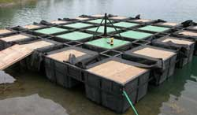
12 May: Put Mirifi fabric in the troughs to hold the soil, and painted the inside area plywood green.
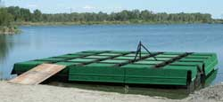
13 May: Put the green outdoor carpet on the outside area plywood. Attached the side "shore" ramps covered with carpet. While the island slave was working on the edges of the island, the lake reached up and grabbed some nuts and bolts, a drill bit, and the island slave's reading glasses. Well of course, on the deep side.
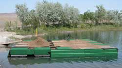
14 May: Due to new weight calculations, adjustments, refinements and a modicum of wild guesses, a new Secret Floating Island Soil Blend #2 was specially formulated and prepared by the fine folks at Morton and Sons nursery supply. 10 yards were delivered, and put on the island. The previous soil blend will be used for, ah, other trees. Some leftover pieces of 4 foot by 4 foot plywood were used to temporarily cover the carpet and green painted plywood, to keep them somewhat clean looking. This aint no smuck operation, you know.
15 May: Soaked the dirt with water, and added the remainder of the soil from yesterday's delivery.
16 May: The photographer had only one job: Take the picture. So when the entire floating island construction crew, and the slave, met for the evening reports and paperwork, the picture was anticipated. He forgot to take the picture. We think the guy has been getting too close to the duck weed and fish bubbles. We would have fired him but it is hard to find a photographer who will work for free and have his own camera. We threatened to get him a government job, to ruin his resume, and we allowed him one more day for the photo. Only one.
17 May: Ah, fer good grief sakes, the computer will not recognize the photo card.
If the boat guys had not belatedly told the photographer to get his camera out of the car, he would have forgot it again. In fact, because he forgot it on the first boat trip out on the lake, you missed the exciting photos of dropping the anchor of 14 five gallon bucket shapes of concrete. Those would have been boring photos, until anchor weight number 13. The attachment chain twisted around the cable it was supposed to slide down, and stopped, just over the edge. There was some serious homdihooming over that while holding, with difficulty, the weight of the 5 gallon size cylinder of concrete plus 120 feet of 7/16 inch cable.
Well, the goal was to set the anchor for Betty's island, with a buoy holding up the end of the cable. So when Betty's island is towed out, we can quickly attach it to its anchor. That is preferable to laboriously dropping the anchor from the island if a breeze comes up. Because the boat guy was a bit leery of all that concrete in his nice boat, we towed Barney's Island back to shore to use it as the barge for the heavy roll of anchor cable and the 14 concrete weights. Good thing Barney's island has some strong trees on it, because one of them held the jammed anchor weight while we figured out what to do. Fortunately we had the engineer on board, whom we hired again, who was able to pull just enough anchor cable back up over the edge of the island, where we untwisted the concrete block attachment chain, and rolled it off again. That was close.
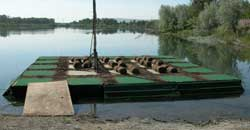
18 May: The rolls of sod were laid. Leftover green carpet was added to the center area. An Osprey perch snag was added. Yeah, a better looking osprey perch snag must yet be found. This one did not look sufficiently large and impressive.
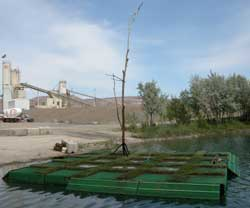
And there we jolly well have it, for the moment. Betty's island is done except for the trees and a dozen or so other things. The trees will be planted in the sod-covered areas. Some of the grass will be protected from the geese. A new snag and a goose nest are also among those other things yet to do.
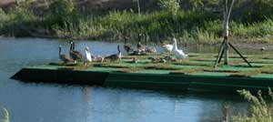
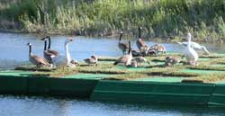
21 May: The geese found the new grass on the floating island. They mowed the grass a bit, and left a goose poop mess. They were a bit disappointed when they returned later to find that the human covered the grass with wire, a temporary arrangement before the tree planting.
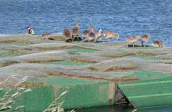
Ordered affordably small trees for the island. They should grow well with 120 of water below them, and a constant supply of fresh goose fertilizer. Chit-chatting with a tree nursery chap, about trees for floating islands, introduces some interesting horticultural conversation.
22 May: Duck Report. The Wood Ducks, nesting along the shore near the construction site for Betty's Island, were seen leading a string of new ducklings into the lake. And another gaggle of ducklings were on the lake. And two Mallard duck nests with eggs were spotted on a couple of the near-shore islands. That is the duck report. The Canadian geese are just entirely too many to get any special report.
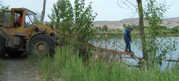
23 May: A new osprey perch was demanded by the island bird habitat engineer, who must be respected for his college degree in wildlife biology, including his ornithology class by the famous Dr. Hudson at Washington State University. No more wimpy osprey perch.
Jim unattached the front end loader bucket, attached the osprey perch arm, and weaseled that big front end loader into an amusing position on the narrow lake perimeter road.
We had to pluck the perch from the water. Well, it was cut in the winter when the lake was frozen. But when it fell, it punched down through the ice and could not be removed, instead of just falling over on the ice. That is why the other wimpy perch was used.
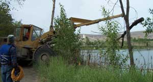
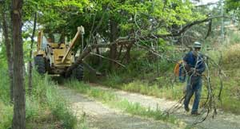
Then carry it to the island.
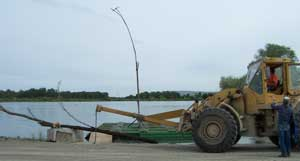
Then set down the new perch, to remove the wimpy perch.
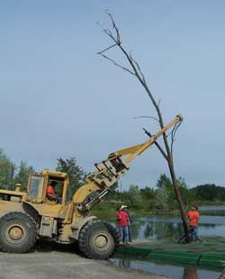
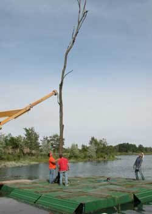
Then put up the new perch. Keep in mind that this thing is really heavy.
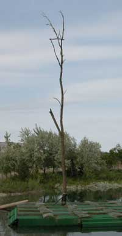
Sure hope it survives the night until the island slave can
get back to it with a come-along to snug it against the brace,
and wrap more wire around it. The engineer is not sure the brace
can hold that much weight and wind drag. In fact, he quit the
moment he saw what we were about to do. It is 40 feet high, with
the osprey perching branch 34 feet high, which is the officially
correct height for common osprey preference. Ask any ornithologist,
or anybody at Bob's Keg and Cork.
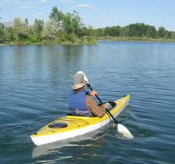
28 May: During an interlude in the Betty's Island project, the island guy went out to analyze Pebbles Island for an an improved goose nest, which he later transported to the island by the same kayak. You might notice that he is a gentleman island guy, and kayaker.
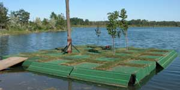
29 May: Planted 2 Kwanzen Flowering Cherry trees and 2 smaller Prairifie Flowering Crabapple trees.
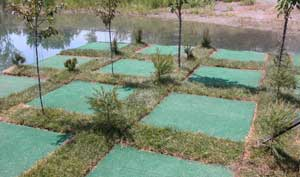
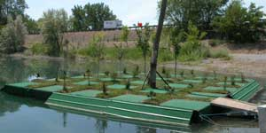
30 May: Planted the conifer seedlings on the island. Except for the remaining list of minor matters, Betty's Island is finished. That called for a celebration of the usual hamburger and usual glass of wine at Bob's Keg and Cork.
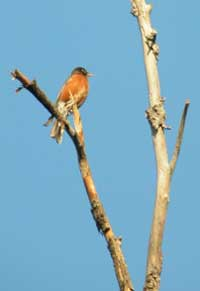
Commander of the Osprey perch. Well, he boldly seized the position, sang about it, and the camera guy had his camera there.
31 May: The tree guy planted a few leftover Mugo Pine on shore. He harassed the beaver who are getting a bit too established in the Swan Pond. The accumulated height of their dam is drowning some of the seedling trees around the Swan Pond. The tree guy adjusted some of the dam works. The beaver will repair the dam hole tonight, and may discuss retaliation.
Continued on Betty's Island -3 page.
Betty's Island-1
Betty's Island-3
Betty's Island-4
Betty's Island-5
Betty's Island-6
Barney's Island
Pebbles Island
Aerial Photos
Neighbors
History
Swans
Birds
Trees
Trees-2
Trees-3
Lake
Links